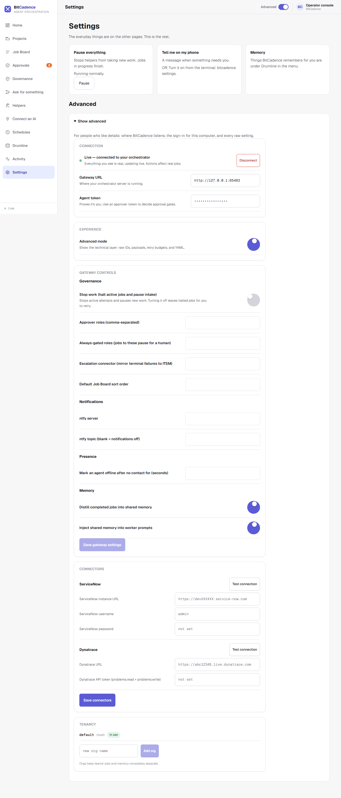

Connecting the Console & Demo Mode
Goal
Connect the BitCadence console to your local gateway using an access token, or use the simulated Demo mode to look around safely before running live tasks.
Step-by-Step Instructions
1. Open the Web Console
Open your web browser and navigate to:
http://127.0.0.1:18789/console
When first opened, the console loads in Demo mode — simulated data. The bottom of the left menu says Demo · simulated data: every job, helper and event shown is a simulation, so you can explore without running real work.
2. Open Connection Settings
Click Settings in the left menu, then open Show advanced at the bottom of the page. The connection form is inside it.

3. Enter Gateway URL and Access Token
In the Connection section:
- Gateway URL: Ensure it is set to
http://127.0.0.1:18789(already populated by default). - Agent token: Paste the operator access token generated during installation (
Ctrl+V). The token begins withmco_tok_.- Where to find your token: Look at the server terminal window, or open
~/.mco/.envin Notepad and copy the value ofMCO_LOCAL_TOKEN.
- Where to find your token: Look at the server terminal window, or open
4. Click Connect
Click the Connect button.
- The bottom of the left menu changes from Demo · simulated data to Live, and a toast says your helpers are ready.
- The connection parameters are stored safely in your browser's
localStorage(bitcadence_conn), meaning you will not have to re-enter them on subsequent visits.
5. Returning to Demo Mode (Optional)
If you ever want to return to sandbox exploration with mock data:
- In Settings → Show advanced → Connection, click Disconnect.
- The UI instantly reverts to simulated state, allowing you to click all controls safely.
The CLI Equivalent
To verify connectivity and token authorization directly from your shell:
# Set token in environment
$env:MCO_AGENT_TOKEN = (Get-Content "$HOME\.mco\.env" | Select-String "MCO_LOCAL_TOKEN").Line.Split("=")[1]
$env:MCO_GATEWAY_URL = "http://127.0.0.1:18789"
# Test health check and auth
mco status
# List online helpers
mco agents
What You'll See
- Header Status: The top right shows a glowing green indicator stating:
Live • 127.0.0.1:18789 • local-operator (admin) - Real Data Sync: The Job Board, Portfolio and Helpers pages now display the actual rows from your local SQLite database (
~/.mco/local.db). - Live WebSocket: A real-time WebSocket connection is established to
/ws/broadcast. Any job created by CLI or another helper immediately animates onto your screen without refreshing.
If It Goes Wrong
1. "401 Unauthorized" or "Invalid token"
- Cause: Incomplete token pasted or mismatched local token.
- Fix: Copy the exact token from
~/.mco/.env. Verify that there are no leading or trailing whitespace characters. Tokens always start withmco_tok_.
2. "Network Error: Failed to fetch"
- Cause: The BitCadence gateway server is stopped or running on a different port.
- Fix: Start the server using
Start BitCadence.batormco serve. Confirm thathttp://127.0.0.1:18789/healthzreturns{"status":"ok"}.
3. "Console reverts to Demo mode after page reload"
- Cause: Browser privacy settings or an incognito window blocked
localStorage. - Fix: Ensure cookies and local site storage are allowed for
127.0.0.1. If using Private Browsing, re-enter the token.